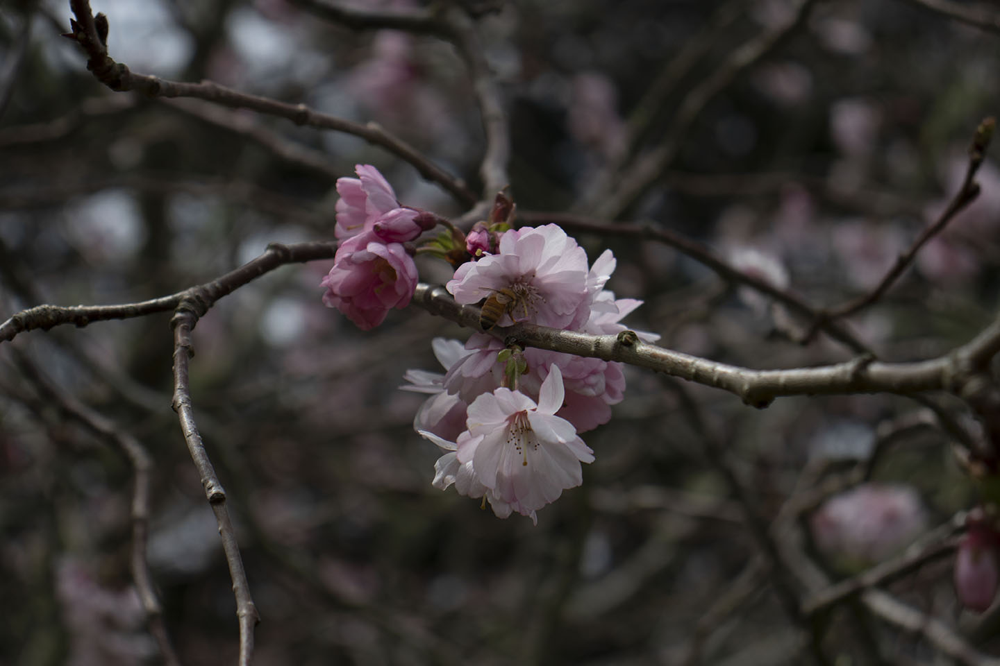

The hills of Southern California will soon be alive with a massive "superbloom" of wildflowers, thanks to an unusually rainy fall and winter, news sources report. Southern California has been parched by drought in recent years, but Mother Nature served up the perfect recipe for a spectacular mid-March superbloom. First, heavy rains since October have saturated the typically dry ground; second, a cold winter locked that moisture in the dirt, which will help wildflower seeds sprout, according to The Mercury News.

Once the superbloom emerges, visitors should expect to see thousands of wildflowers, including poppies, verbenas, desert sunflowers and evening dune primroses. [Stunning Images of a California Superbloom] The seeds of these flowers have been lying dormant all winter, but now that temperatures are rising, they'll soon burst into colorful plants, the Mercury News reported.
One of the flower hotspots is Anza-Borrego Desert State Park, located northeast of San Diego in the Colorado Desert. "It's going to be better than it's been in the last dozen or so years," Mike McElhatton, the educational program director of the Anza-Borrego Desert Natural History Association, told AccuWeather. Southern California's last superbloom happened in 2017, but this one may be even more expansive.
"The rain has hit us nearly perfectly," McElhatton told AccuWeather. "We are going to have a really widespread bloom; in the past, we have seen only small concentrations in select valleys. This year, it already appears that a vast majority of the ... park will be in bloom."
But flowers are always fleeting. So plan ahead if you're going to visit the blooming hills to get that Instagram-perfect photo of blue arroyo lupines, purple Canterbury bells and periwinkle forget-me-nots.